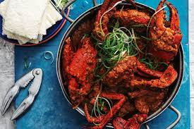

Chili Crab

Description
You’ve heard about it all your life, you might’ve even tried it on its home turf in Singapore. It is probably the most iconic crab dish in the world. It’s grand, it’s bold, it’s fun, and it’s an occasion. And of course, utterly delicious!
Ingredients
- 1 tablespoon (8g) cornstarch
- 2 tablespoons (30g) water
- 7 tablespoons (104ml) peanut oil
- 2 to 3 whole shallots, minced (about 1/2 cup)
- 1 1/2-inch knob ginger, grated (about 2 tablespoons)
- 6 medium garlic cloves, minced (about 2 tablespoons)
- 4 Thai chiles, minced
- 2 whole live Mud or Dungeness crabs (about 1 pound each), prepared (see notes)
- 2 cups (500ml) homemade or store-bought low-sodium chicken broth
- 1/4 cup (66g) tomato paste
- 1/2 cup (125ml) hot-sweet chili sauce (see notes)
- Salt, to taste
- Sugar, to taste
- 1 large egg, beaten
- 1/2 cup thinly sliced green onions
- 1 cup fresh cilantro leaves
- Rice or steamed buns to serve on side
Steps:
- In a small bowl, whisk cornstarch with 2 tablespoons water; set aside.
- In a large wok with a lid (or Dutch oven), heat oil over medium heat until shimmering. Stir in shallots, ginger, garlic, and chiles. Cook and stir until fragrant, about 1 minute.
- Add crab pieces and broth. Increase heat to medium-high and bring to a boil. Cover loosely and gently boil (decrease heat if necessary), until crab has turned red and is nearly cooked through, about 6 minutes.
- Remove cover and stir in tomato paste and chili sauce. Simmer for 1 minute and season to taste with salt, sugar, or chili sauce.
- Stir in cornstarch mixture and bring to a boil to thicken.
- Remove from heat and whisk in egg. Stir in green onions.
- Ladle into serving dish, sprinkle with cilantro and serve.